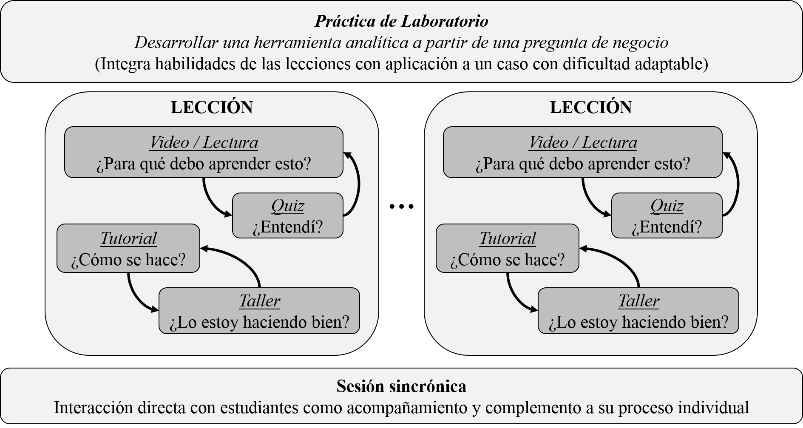
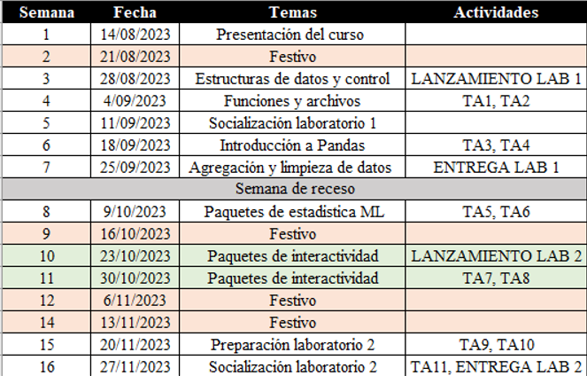
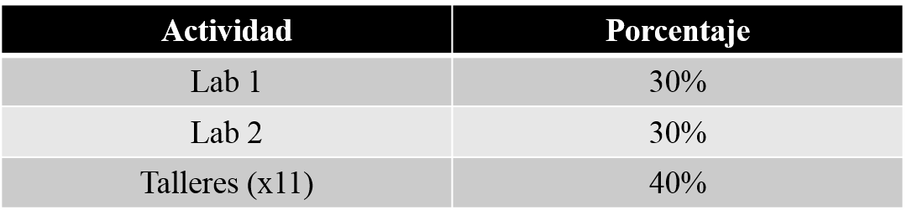
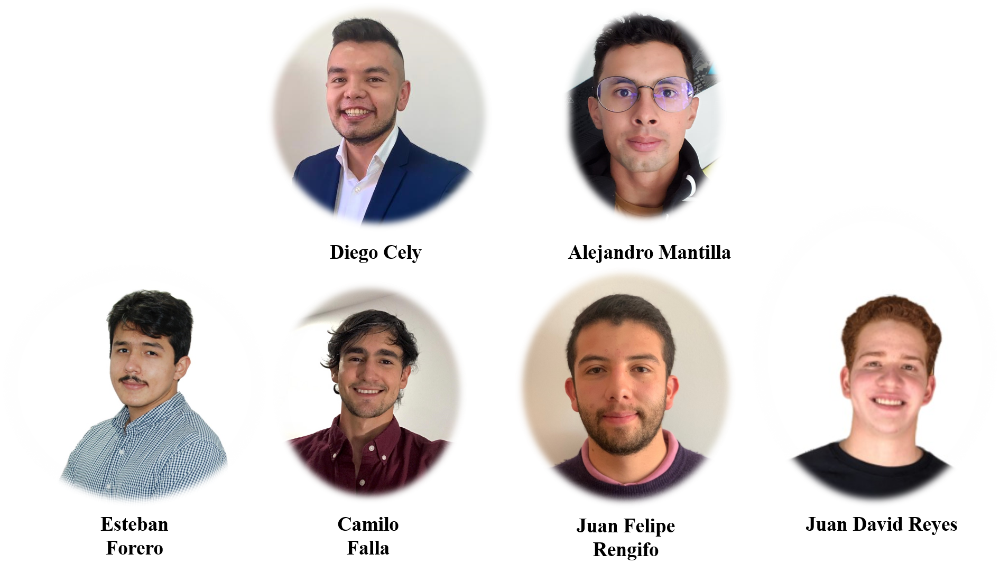

La analítica de datos es un campo de acción profesional que, por su potencial para mejorar la toma de decisiones, ha mostrado un crecimiento significativo en lo que va del siglo. Si bien no se trata de un área completamente nueva (pues se basa en técnicas bien consolidadas, como la estadística), su aplicación exitosa en las organizaciones con la tecnología disponible en la actualidad sí implica una combinación novedosa de varias áreas. De esa intersección de conocimientos surgen el auge y la terminología cambiante a la que estamos expuestos y que este curso busca llevar a su expresión más fundamental: usar evidencia para responder preguntas relevantes en la toma de decisiones.
Los avances en analítica de datos vienen siendo desarrollados por personas con muy variados perfiles profesionales y tienen aplicación en muy diversas industrias. Por esto, hay una alta heterogeneidad en el tipo de formación y experiencia de quienes ingresan a programas académicos en analítica de datos. Incluso, no es extraño encontrar personas que provienen de profesiones no enfocadas en razonamiento cuantitativo, así como personas que no han tenido experiencia sobre lo que implica un proyecto de analítica de datos, o que no han tenido un acercamiento a las herramientas tecnológicas y de computación que se necesitan en esta área.
Herramientas Computacionales para Análisis de Datos es un curso diseñado como una primera experiencia en analítica de datos para esta población heterogénea, teniendo como foco principal el desarrollo de habilidades prácticas de programación. Su propósito es ofrecer una visión general del quehacer del profesional en analítica de datos y desarrollar la capacidad de utilizar la programación como una herramienta cotidiana para actividades críticas de proyectos de analítica de datos. Así, partimos de conocer la lógica y procesos propios de un proyecto de analítica de datos, y entender el rol de la programación en ese contexto, para concentrarnos en aplicar esos conceptos al desarrollo de herramientas computacionales que den soporte adecuado al proyecto del cual hacen parte.
Para lograrlo, daremos un vistazo al proceso de identificar oportunidades de aplicación de la analítica de datos en las organizaciones y sintetizarlas en preguntas de negocio relevantes. Luego, nos enfocaremos en explorar y alistar los datos que puedan ser buenos insumos para abordar la pregunta, elegir y evaluar modelos que puedan ser de utilidad (dada la pregunta y los datos disponibles), y diseñar los procesos necesarios para responderla. Trabajaremos con preguntas, datos y modelos sencillos para que el foco esté en ganar familiaridad con el proceso y afianzar las habilidades de programación y diseño de herramientas analíticas, articuladas siempre con una pregunta de negocio.
Este, entonces, más que un curso de programación, es un curso sobre cómo poner la programación al servicio de un proyecto de analítica de datos. En ese sentido, como equipo docente, nuestra misión es proveerte una ruta, una serie de recursos, y el acompañamiento necesario para que:
Relaciones de forma práctica los conceptos y procesos
fundamentales de la analítica de datos.
Implementes una herramienta analítica que permita responder una
pregunta de negocio para un problema sencillo de analítica de datos,
utilizando únicamente algorítmica básica en Python.
Implementes una herramienta analítica que permita responder una
pregunta de negocio para un problema sencillo de analítica de datos,
utilizando los paquetes especializados para análisis de datos
disponibles en Python.
El propósito de esto es:
Que te quede claro, desde el inicio, que la analítica de datos no se reduce a desarrollar modelos, ni a procesar los datos, ni a comunicarse continuamente con los actores involucrados, sino a una combinación de todo lo anterior en diferentes proporciones, según el momento.
Para lograrlo, en este curso:
Te introducimos a los dominios que constituyen un proyecto típico
de analítica de datos según INFORMS, la asociación profesional más
grande en el área.
Te orientamos a lo largo de dos prácticas de laboratorio en las que te enfrentas a problemas sencillos de analítica de datos que implican la articulación de estos dominios en el desarrollo de una herramienta sencilla para análisis de datos.
La principal actividad para desarrollar este objetivo es el Laboratorio 1, que se realiza durante la primera mitad del curso y busca asegurar que te puedes desenvolver aplicando programación básica en el contexto de analítica de datos.
El propósito de esto es:
Que relaciones el proceso lógico de los dominios de un proyecto
de analítica de datos con el proceso lógico de desarrollar algoritmos
que permiten la implementación real del proyecto.
Que tengas la oportunidad de refrescar tus conocimientos de
programación (en general y en Python), o de consolidarlos si apenas te
inicias en ella.
Para lograrlo, en este curso:
Te ofrecemos material introductorio a Python y el ecosistema de
herramientas su alrededor, enfatizando sus ventajas en cuanto a
facilidad de uso, versatilidad y posibilidad de especialización en
diferentes contextos.
Repasamos conceptos fundamentales de algorítmica y programación
con una orientación a su uso en analítica de datos. Esto incluye:
La principal actividad para desarrollar este objetivo es el Laboratorio 2, que se realiza durante la segunda mitad del curso y busca asegurar que, además de estructurar algorítmicamente el proceso de responder una pregunta de negocio, puedes apoyarte en paquetes especializados para análisis de datos que facilitan la implementación del proyecto al proveer bloques de código listos para resolver tareas puntuales.
El propósito de esto es:
Pandas, que es la columna vertebral en la analítica de datos en
Python.
Seaborn y plotly, que permiten generar visualizaciones
sofisticadas, comunes en analítica de datos, de manera sencilla.
Statsmodels y Scikit Learn, que permiten desarrollar una amplia
variedad de modelos estadísticos y de machine learning.
Panel y ipywidgets, que permiten agregar elementos interactivos a
los desarrollos en Python para generar tableros de control.
Para esto, en este curso:
Te mostramos las funcionalidades más usadas del paquete Pandas en
analítica de datos:
Funciones básicas de Pandas para leer, escribir y explorar datos,
con un poco de preámbulo sobre Numpy, el paquete que soporta Pandas tras
bambalinas.
Exploración y análisis descriptivo utilizando indexación,
filtrado y métodos básicos de descripción y graficación en Pandas.
Agregación de datos de múltiples DataFrames, limpieza de datos
tipo texto y tipo fecha/hora, y manejo de datos faltantes en Pandas.
Te damos ejemplos de usos comunes de los paquetes Seaborn y
Plotly, en conjunto con Pandas, para generar visualizaciones
sofisticadas fácilmente.
Te damos ejemplos de usos comunes de los paquetes StatsModels y
ScikitLearn, en conjunto con Pandas, para desarrollar modelos básicos de
estadística y machine learning.
Te damos ejemplos de usos comunes de los paquetes Panel y ipywidgets, en conjunto con Pandas, para agregar interactividad a un Jupyter Notebook, o generar aplicaciones web interactivas de tableros de control.
Los principales hitos del curso son sus dos laboratorios, en los cuales se desarrollan las metas planteadas para el curso. Semana a semana se cuenta con varios tipos de recursos (videos, lecturas, tutoriales, talleres) que permitirán a los participantes ir desarrollando las habilidades que se les demandarán en cada laboratorio, como se detalla en la figura y secciones siguientes.

Los primeros tipos de recurso son los videos, lecturas y tutoriales que conjuntamente desarrollan los contenidos del curso:
Videos: presentan el contexto y sintetizan los
principales conceptos de un tema.
Lecturas: complementan el contenido de los videos,
desarrollando algunas ideas con más profundidad y relacionando el
contenido del curso con la analítica de datos en la práctica.
Tutoriales: proveen las instrucciones técnicas necesarias para desarrollar los temas de programación del curso, por medio de documentos que combinan explicación en texto y ejemplos de código.
Los segundos tipos de recurso son los cuestionarios, talleres y laboratorios, que corresponden a las actividades que los participantes desarrollan para medir y mejorar su progreso:
Cuestionarios: permiten al participante verificar su
entendimiento de los temas de los videos, lecturas y tutoriales.
Talleres: ofrecen al participante una serie de
ejercicios puntuales sobre cada uno de los temas cubiertos.
Laboratorios: proponen un reto relacionado directamente con los objetivos del curso con el fin de que el participante integre las habilidades que ha ido adquiriendo en los talleres para solucionar un problema de analítica de datos.
Estas actividades son clave para hacer seguimiento del progreso en el curso y resolver las inquietudes que surjan a medida que se desarrollen las demás actividades.
El curso se divide en dos fases, enmarcadas por cada uno de los laboratorios. Sin embargo, la presentación de los temas se va dando de forma que se logren cubrir los temas a tiempo antes de las entregas, por lo cual: las primeras tres semanas se concentran en el dominio de conceptos básicos de analítica de datos y programación en Python; las tres semanas siguientes se ocupan del uso de Pandas y otros paquetes fundamentales para analítica de datos en Python; y las semanas finales cubren los fundamentos de paquetes útiles para desarrollar modelos cuantitativo y desarrollar herramientas interactivas.

Las principales actividades de evaluación son los laboratorios, que integran todos los conocimientos y habilidades que se desarrollan a través de los videos, tutoriales y talleres. Por esto, cada uno de los laboratorios corresponde a un 30% de la calificación final del curso, y son calificados por el equipo docente con apoyo de software.
Los talleres se plantean como ejercicios cortos con calificación automatizada, que se pueden re-enviar hasta que la persona sienta que ha dominado los temas planteados. A pesar de tener un carácter conceptualmente formativo, hemos optado por que tengan peso en la calificación final, para enfatizar y fomentar la idea de que la maestría en un tema sólo se adquiere con extensas horas de práctica.

La visión, actividades y recursos que se condensan en este curso no han surgido de un proceso lineal, sino de un ejercicio iterativo de diseño, refinación y ajuste de material desarrollado en un largo plazo. A continuación presentamos el equipo que lo ha hecho posible en su forma actual.

Diseño:
Camilo Gómez
Coordinación y edición de contenido:
Diego Cely
Desarrollo tecnológico:
Alejandro Mantilla
Desarrollo y revisión de contenido:
Esteban Forero,
Camilo Falla, Juan Felipe Rengifo, Juan David Reyes, Alejandro Mantilla,
Diego Cely.
Desarrollo de contenido previo:
Juan Nicolás Motta,
Pablo Gómez, Ariadna de Ávila, Camilo Gómez.
Adicionalmente, agradecemos el apoyo de la coordinación de las maestrías MIIA y MIAD y los equipos de ConectaTE. Particularmente, agradecemos el acompañamiento de Norma Rocío Hendez, Juan Pablo Reyes, Óscar Perez y Andrés Felipe Tamayo durante el desarrollo del curso.